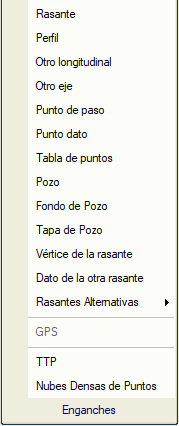
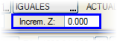

Nesne referansı (yakalama) menüsüne, kırmızı kot tasarımına özgü bir dizi seçenek eklenir. Bu seçenekler, kullanıcının farklı elemanları destek noktası olarak kullanmasına ve böylece aktif eksenin kırmızı kotunun, projenin diğer bölümleriyle, örneğin aynı projenin diğer eksenleri veya dikkate alınması gereken diğer harita elemanlarıyla olan ilişkisini tam olarak tanımlamasına olanak tanır.
ISTRAM®/ISPOL®'un diğer grafik alanlarında olduğu gibi, aktif yakalama türüne göre seçilen nesne bulunduğunda, fare imleci görünümünü değiştirir. Bu araç, belirtilen Kot Art. (kot artışı) değeriyle birleştirilir ve yakalanan nesneye fare ile tıklandığında elde edilen kota (işaretine göre) eklenir veya çıkarılır.
Kırmızı kot tasarımı sırasında mevcut olan yakalama modları şunlardır:
| Kırmızı Kot |
Mevcut kırmızı kota yakalama.
|
| Profil |
Alınan referans, arazi boykesitinin veya arazi enkesitleriyle kesilerek oluşturulabilecek diğer herhangi bir yüzeyin noktalarıdır.
|
Diğer boykesit
|
İmleç, yüklenmiş olan “diğer boykesitlere” yakalanır.
|
Diğer eksen
|
Bu yakalama, burada yüklenmiş olan diğer eksen(ler)in platformu üzerindeki eksen kesişim noktalarını alır.
|
Geçiş noktası
|
Geçiş noktaları, bir eksenin platformunu (kırmızı kotunu ve deverlerini kullanarak) başka bir eksene yansıtarak elde edilen koordinatlı noktalardır (KM,Z). Ayrıca kullanıcı tarafından KM-kot dizileriyle de sağlanabilirler. Bu yakalamayı kullanabilmek için, bu noktaların kullanıcı tarafından yüklenmiş olması gerekir (geçiş noktaları ISTRAM®/ISPOL® tarafından .pas uzantılı dosyalarda saklanır).
|
Veri noktası
|
Bu yakalama ile, aktif eksenin başka bir elemanının tanımı sırasında, aktif eksenin herhangi bir boykesitinin kırmızı kot tanımında kullanılan noktalardan (KM1, Z1 ve KM2, Z2) herhangi biri kullanılabilir. Bu işlevsellik, örneğin hendek tanımında ana yolun kırmızı kot verilerini referans olarak kullanmayı sağlar.
|
Nokta tablosu
|
Boykesit çizimleri menüsünde yer alan nokta tablosuna referanslı yakalama.
|
Baca
|
Boru hattı projelerinde tanımlanmış bacalara yakalamayı sağlar.
|
Kırmızı kot somesi
|
Düşey kurpların somelerine referanslı yakalama.
|
Grid
|
Fare imleci, kırmızı kot tasarım alanında mevcut olan düzenli grid'e yakalanır.
|
| Kırmızı Kot Alternatifleri | Kırmızı kot alternatiflerine yakalanmak mümkündür, bunun için "Kırmızı kot alternatiflerini çiz" seçeneğinin etkin olması gerekir, yakalanacak alternatif numarası seçilebilir.
|
|